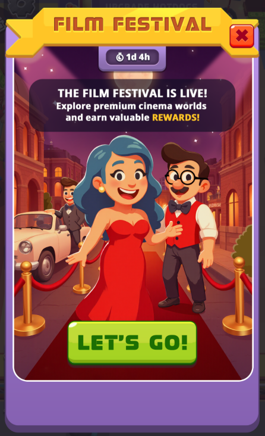
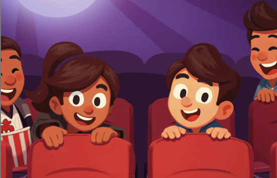
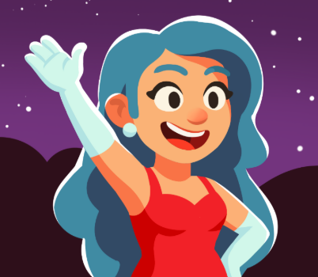
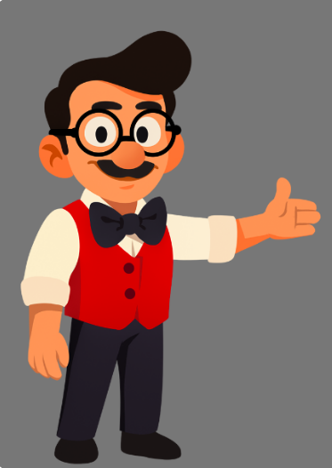

LoRA Training From Scratch
Cinema World (idle simulation game)
Cold-Start AI Assets
Training a LoRA with no existing data set

Role
- Art direction and managed model fine-tuning
Cross-functional
project team
Art Director, 2D Artist
Target users
2D Artists
The challenge
Training a LoRA with zero initial source data, relying on a single character design image and found references


The solution
With AI image manipulations and a few LoRA training iterations we landed on a style the art director was happy with

Human in the loop
Using generative AI workflows and LoRA training to eliminate the repetitive part allows the artist to focus on creative tasks and art direction rather than being a content mill
Bottlenecks and limitations
Relying on a limited number of initial assets required a few iterations of LoRA training, image generation, cherry-picking and training again with the new data set. Training on AI-generated content requires strict filtering to prevent quality degradation